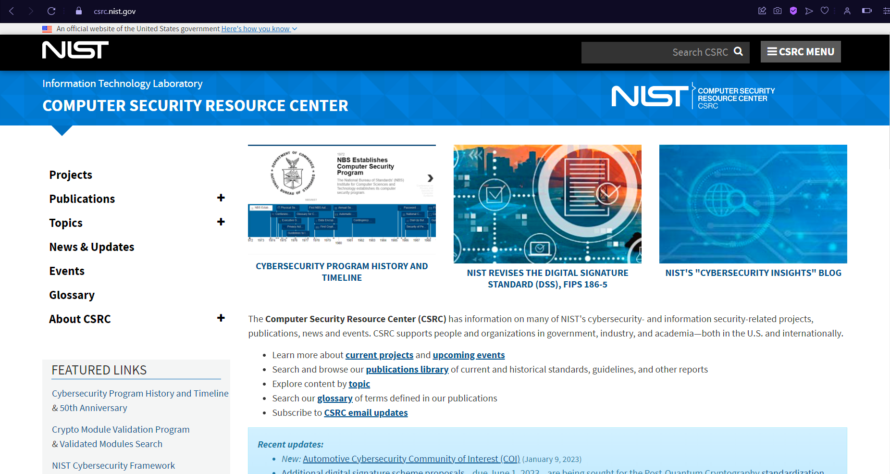
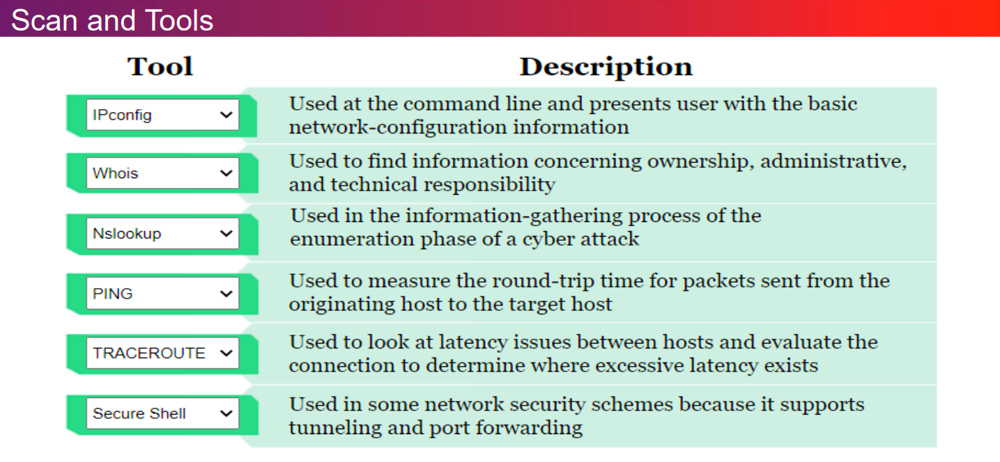
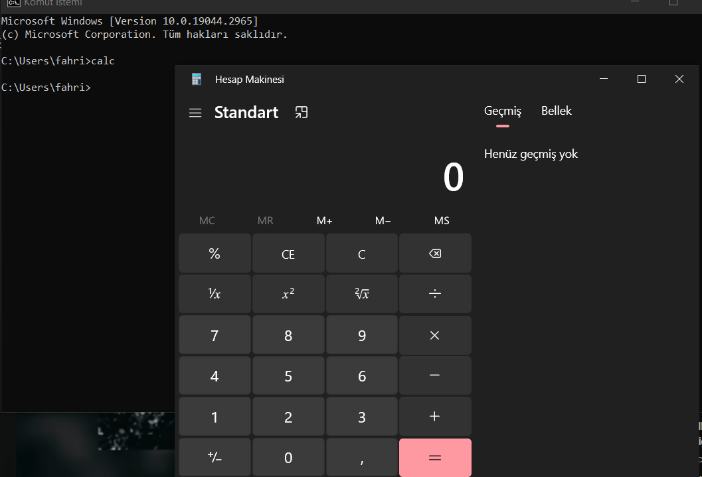
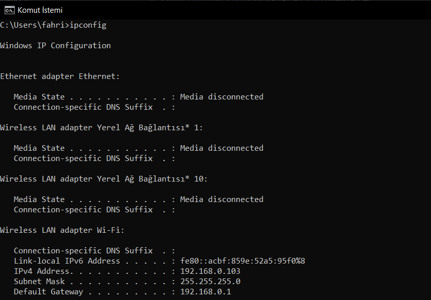
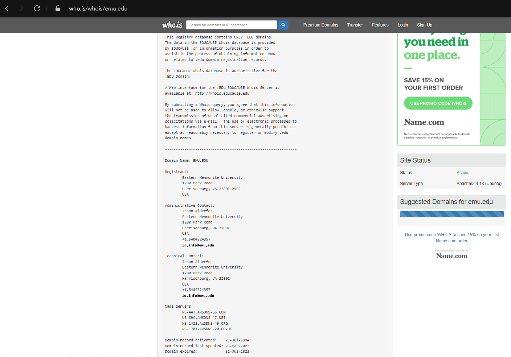
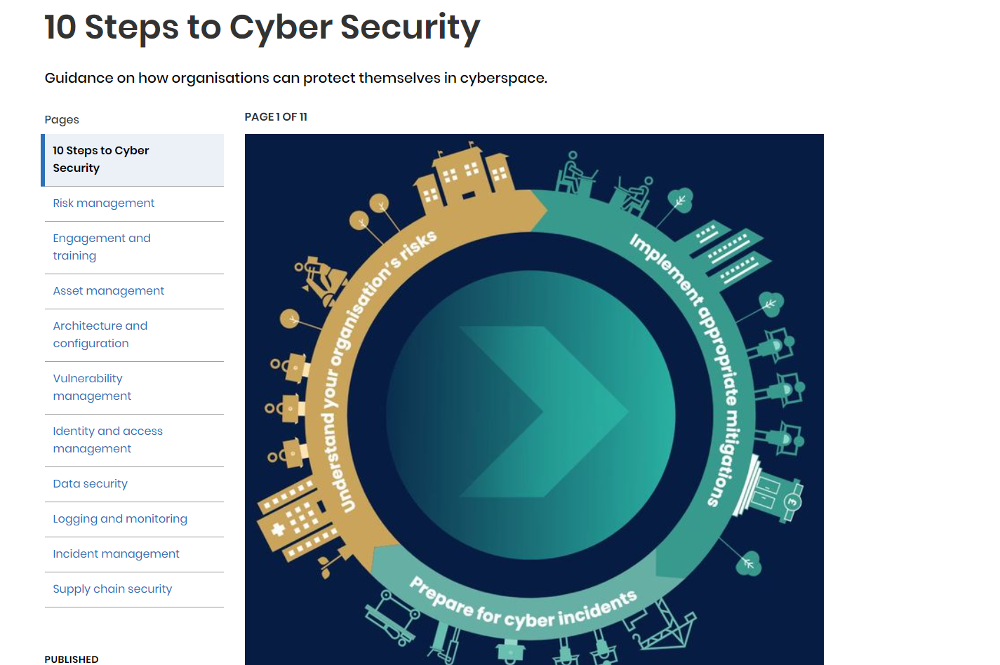

ACT-2
The Computer Security Resource Center (CSRC) has information on many of NIST's cybersecurity- and information security-related projects, publications, news and events. There are many projects on (CS) the foundation of csrc helps us to analyze them and follow the news on the world.
As you seen above there are many important tool for scanning. I explained some of them before. I took them from your slides. You can see the tools and what they do. You can use some of them in cmd. I am going to explain what is cmd and what can we do with it.
Firstly i want to explain what is the "cmd". Cmd is the basic command system of windows.Before the graphical interface windows used to have this command system. There is no icons , graphical objects. You can do your process to use it. As an example i want to open calculator , when i write my commanda in cmd it opens it. When you print screen the IPCONFIG the cmd will show the DOS properties of your computer You can see the results.Users can combine and apply commands

As i said we can write on cmd some of scanning commands for instance IPCONFIG. That command helps us to see properties of computer's network. According that we can analyze our network and computer connection.
Also i tried the PING command.That command is very important i think. We can think the ping is data pocket which sends by client. You can make ping any server by the way. When you write ping the client sends a pocket to the server after that process server send it an answer.If the time of this process is low that means ping is low and internet is fast but if this process is slow and it makes you wait , that means connection is not good and internet is slow.
While i was searching i found a software which is named Nessus. I learned that is really useful for scanning. Simple way Nessus is a remote security scanning tool, which scans a computer and raises an alert if it discovers any vulnerabilities that malicious hackers could use to gain access to any computer you have connected to a network. For instance you have huge pool , and people pay after they can swim in it but so crowded you can not remember everyone. You decide you need a security guy exactly Nessus is that security guy it checks everybody they are legal or illegal.

Another scanning tool is "Whois" That provides to know whos is the owner , where is the central location , what is owner's name (it can be id or normal name ) , shortly it provides for us useful informations about website. Also it helps define the domain name they have internet service for this.
There are so many risk factors in (CS) we need to search always and keep going forward for improving ourselves. There is a foundation about (CS) "National Cyber Security Center" They share with us useful protecting tricks against hackers. They are trying to keep safe us from threats. They published in 2016 "Ten Steps To Cyber Security". That tells key 10 elements that can keep you safe and solve problems you can see the bottom side. Also there is a foundation similar like that , named "OWASP", i am going to explain it next activities.
In conclusion , scanning tools are important they give us informations and opportunuties to understand the environment , if we can use them efficiently the result is going to be good and we can choose our path according to tools.